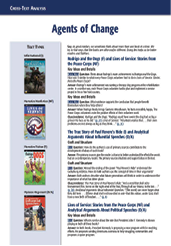
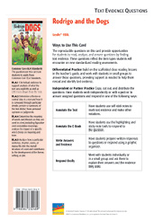

Related Resources
Text-Dependent Comprehension
Other Titles in This Topic Set
Online Resources
Lexile® 930L
Rodrigo and the Dogs
ELA Strategies and Skills
Text-Dependent Comprehension Strategies
Extend Language Knowledge
Vocabulary Strategies
Vocabulary List
*General academic word
Writing
|
What Makes This Text Complex? |
|
|
Purpose and Levels of Meaning |
The story has a multidimensional theme that requires readers |
|
Structure |
The text encompasses a range of narration modes from detailed and realistic dialogue to personification and sequential plot pacing. (pp. 4–5)★ |
|
Language Conventionality and Clarity |
Chapters include simple and compound sentences, use of |
|
Knowledge Demands |
Some readers may not have familiarity with the narrative structure of the story, and the use of Spanish phrases. |
Qualitative text complexity dimensions from the CCSS are scored on the following scale: 1–Low; 2–Middle Low; 3–Middle High; 4–High.
★Citations refer to pages within this teacher’s guide that address the specific text complexity.
LEXILE® is a trademark of MetaMetrics, Inc., and is registered in the United States and abroad.
Common Core Standards © Copyright 2010. National Governors Association Center for Best Practices and Council of Chief State School Officers. All rights reserved.
© Benchmark Education Company, LLC. All rights reserved. Teachers may photocopy the reproducible pages for classroom use. No other part of the guide may be reproduced or transmitted in whole or in part in any form or by any means, electronic or mechanical, including photocopy, recording, or any information storage or retrieval system, without permission in writing from the publisher.
Narrative Fiction:
Realistic Fiction
Topic Set:
Agents of Change
Scaffolded Preview for
ELs and Struggling Readers
Support students to access the text by orally introducing academic vocabulary, language structures, and concepts.
Pages 2–3. Notice the blue boldfaced words on these pages. Some are Spanish words and some are English words. Both types are defined at the bottom of each page.
Pages 4–5. Now look at the illustration on these pages. What is happening here based on the characters’ expressions?
First Read
Read Part 1 (pp. 2–12) RL.6.1, RL.6.2, RL.6.3, W.6.10, SL.6.1a, SL.6.1b, SL.6.1c, SL.6.1d
Preview and Make Predictions
Invite students to flip through the book and view the illustrations. Or display the e-book and preview the pages together.
Read aloud the features of realistic fiction on the inside front cover. Then have students turn to the Table of Contents to see how the book is divided into chapters. Invite students to read the book description on the back cover.
Ask: What characters and events are written about in realistic fiction?
If your students need more support, use the Scaffolded Preview provided.
Set a Purpose
Say: Let’s begin by reading Chapters 1–2 of the story, or Part 1. As you read through these pages, use self-stick notes to identify the main characters and setting, and to note the main events.
Choose the reading option that best meets your students’ needs.
Summarize Key Story Elements: Think and Write Together
Invite students to discuss the main characters, setting, and events in Part 1. As a group, create a Story Elements Chart. Then, as a group, construct a summary of the key ideas in Part 1. If students need more support to summarize the text, use the lesson on page 3 of this guide.
|
Characters |
Setting |
|
Rodrigo, Rodrigo’s mom, Santo, Abuelo, Abuelo’s friends, Mrs. Brown |
Rodrigo’s home; Abuelo’s rehabilitation center |
|
Main Events |
|
|
Rodrigo visits Abuelo at the rehabilitation center and plays cards with Abuelo and the other men there; they talk about their dogs and wish they could have them with them. |
|
|
Rodrigo tells his mother about his day with Abuelo and how the men were sad without their dogs; but he says that he has a plan to help them. |
|
|
Rodrigo and his mom visit the therapy dog-training center where Mrs. Brown begins to train Santo to be a therapy dog. |
|
Sample Part 1 Story Elements Chart
Lesson: Visualize Key Details
Explain that when readers summarize, they include only the most important information in the text. Explain that visualizing key details can help readers identify these important events.
Say: Close your eyes and listen as I read this part of the story. Picture in your mind what is happening.
Read aloud page 6.
Say: What did you see when I described the conversation between the men? How did Rodrigo react to the conversation? Why is this important?
Pair students and have them write a summary of page 6.
Summarize Key Story Elements: Think/Pair/Write/Share
Bring students together and ask several pairs of students to read their summaries aloud. As a whole group, evaluate the summaries and identify which details were easy to visualize and which were not. Point out that the details that were difficult to visualize are not likely to be in a summary of these chapters. Then write a group summary of the key events in Part 1.
|
Rodrigo goes to visit Abuelo at the rehabilitation center and plays cards with the men there. Rodrigo listens as the men talk about the dogs they used to have and how they miss them. Rodrigo feels bad for the men and wants to help, so he and his mom go to the therapy dog training center. Mrs. Brown starts to train Santo to be a therapy dog. |
Sample Part 1 Group Summary
Scaffolded Preview for
ELs and Struggling Readers
Support students to access the text by orally introducing academic vocabulary, language structures, and concepts.
Pages 13–14. Look at the dialogue on these pages. Remember that dialogue is a plot device that moves the story forward as well as giving insight into how the characters think about different issues in the text.
Page 16. How does Rodrigo look in the picture on this page? What can you infer about his success so far in solving the problem at the rehabilitation center?
Page 19. The term certification evaluations is used on page 19 in reference to the training center. At the bottom of the page, Rodrigo wants to make sure Santo passes the test. What are certification evaluations?
Read Part 2 (pp. 13–19) RL.6.1, RL.6.2, RL.6.3, W.6.10, SL.6.1a, SL.6.1b, SL.6.1c, SL.6.1d
Set a Purpose
Say: As you read Chapters 3–4, or Part 2, continue to use self-stick notes to flag important details about the text and illustrations that will help you summarize the story. Think about how Rodrigo works to solve the problem at the rehabilitation center.
Choose the reading option that best meets the needs of your students. If students need more support to access the text, use the Scaffolded Preview provided.
Summarize Key Story Elements: Think/Pair/Write/Share
Invite students to share with a partner what they noted in the text. Have them collaborate to create a new Story Elements Chart for Part 2 that lists the characters, settings, and main events.
|
Characters |
Settings |
|
Rodrigo, Mr. Thompson, Santo, Mrs. Brown, members of the therapy dog group |
the rehabilitation center; Rodrigo’s home; the therapy dog center |
|
Main Events |
|
|
Rodrigo talks to Mr. Thompson about starting a therapy dog program for all of the residents at the rehabilitation center, but Mr. Thompson doesn’t have the money to pay for it. |
|
|
Rodrigo talks to Mrs. Brown about the program, but she is unable to do it without having the money to support it. |
|
|
Rodrigo continues to practice training Santo, who is improving, and Mrs. Brown gets the group to help with Rodrigo’s fund-raiser. |
|
Sample Part 2 Story Elements Chart
Then have pairs collaborate to write their own summary of the key ideas in Part 2. If students need more support in deciding what to include in a summary, refer back to the lesson strategy taught in Part 1.
Bring students together and ask several pairs of students to read their summaries aloud. As a whole group, evaluate the summaries and identify any key information that was omitted.
As a group, construct a written summary of the key ideas in Chapters 3–4.
|
Rodrigo asks Mr. Thompson if he would be interested in a therapy dog program, but Mr. Thompson does not have the funds to pay for it. So, Rodrigo and Mrs. Brown work together to have a rummage sale as part of a fundraiser to get the money for the program. Meanwhile, Rodrigo continues to train Santo, who is improving as a therapy dog every day. |
Sample Part 2 Group Summary
Read Part 3 (pp. 20–30) RL.6.1, RL.6.2, RL.6.3, W.6.10, SL.6.1a, SL.6.1b, SL.6.1c, SL.6.1d
Set a Purpose
Say: As you read Chapters 5–7, or Part 3, continue to use self-stick notes to flag details about the characters and how their actions contribute to the events in the story.
Choose the reading option that best meets the needs of your students. If students need more support to access the text, use the Scaffolded Preview provided.
Summarize Key Story Elements: Think and Write Independently
Ask students to review the main events they flagged in Part 3. Have them independently create a chart like the ones completed for Parts 1 and 2. Then have them write their own summary of the key information in Part 3.
|
Characters |
Setting |
|
Rodrigo, Santo, Rodrigo’s mom, Mrs. Brown, Rebecca Cassidy, Mr. Thompson, Abuelo |
Rodrigo’s home, the therapy dog center, the rehabilitation center |
|
Main Events |
|
|
Rodrigo and Santo pass their therapy dog evaluation and pass the test. |
|
|
Rodrigo and Mrs. Brown have a rummage sale and receive enough money to keep a therapy dog program running for at least a year at the rehabilitation center. |
|
|
Rodrigo and Santo visit the rehabilitation center to tell the group about the new program; everyone is thrilled to have a chance to spend time with the therapy dogs. |
|
|
Three months later, Abuelo, Rodrigo, and Santo still visit the rehabilitation center as part of the therapy program and learn that the board will continue funding it because it has greatly improved the lives of the people who live there. |
|
Sample Part 3 Story Elements Chart
Bring students together and ask volunteers to read their summaries aloud. As a whole group, evaluate the summaries.
|
Rodrigo and Santo pass their evaluation and Rodrigo and Mrs. Brown have a successful rummage sale fundraiser. They are able to get enough money to fund the therapy program at the rehabilitation center for a full year. Rodrigo tells the group at the center and everyone, especially Abuelo, is thrilled to see Santo and the other dogs. Three months later, Rodrigo learns that the center will continue to fund the program because it has helped the patients at the center and improved their quality of life there. |
Sample Part 3 Group Summary
Scaffolded Preview for
ELs and Struggling Readers
Support students to access the text by orally introducing academic vocabulary, language structures, and concepts.
Page 21. Look at the illustrations on page 21. What story do they tell? What is happening here?
Page 22. What word might be unfamiliar to us on page 22? What is the meaning of sentry?
Page 27. The dialogue and picture on page 27 both show how the patients at the center feel about the dogs. Think about why the dogs are so important to them.
Page 30. Read the last sentence on page 30. What might Rodrigo mean when he says the therapy dog program turned into so much more?
Close Reading Options
Support students to dig deeper into the text. Choose one or more of these close reading options, or choose an alternate focus that addresses your students’ needs.
Routine for Finding
Text Evidence
|
Text Evidence |
|
“Abuelo looked down at his cards and Rodrigo noticed a melancholy look spread across his face.” (p. 5) |
|
“‘I had a sweet little cocker spaniel for years,’ Aiden chimed in, wistfully.” (p. 5) |
|
“Two beautiful greyhounds—I gave them to my daughter last year when I moved in here.” (p. 6) |
|
“It’s too bad we can’t have our dogs here with us.” (p. 6) |
|
“Rodrigo listened and watched the men’s faces light up with their memories. Like Abuelo, he also thought it was a shame that the dogs couldn’t live in the facility . . .” (p. 6) |
|
|
|
Character |
|
Rodrigo wants to help the residents feel less lonely without their dogs at the center. |
Sample Theme Graphic Organizer
Close Reading and Analysis
Close Reading Option 1: Analyze Character
RL.6.1, RL.6.2, RL.6.3, W.6.10, SL.6.1a, SL.6.1b, SL.6.1c, SL.6.1d
Model Finding Text Evidence
Display and read aloud the close reading question.
|
Why did Rodrigo want to ensure all of the residents could benefit from the therapy dogs? |
Remind students that Rodrigo’s actions in the story are fueled by his love for Abuelo at first. Events in the story help Rodrigo to see the benefit of having a therapy dog program at the rehabilitation center.
Say: In order to figure out why Rodrigo wanted to do something for all of the residents, we need to first look back at the beginning of the story when Rodrigo goes to visit Abuelo.
Reread pages 4–6.
Say: Rodrigo notices a melancholy look spread across Abuelo’s face when he thinks of his past and how Santo is all he has left of it. We can infer that Rodrigo realizes Santo is Abuelo’s connection to that past. He knows that Abuelo misses his dog, but he also begins to see that others at the center miss their own dogs in similar ways.
Display a blank Text Evidence Chart and model how you record the text evidence you found.
Support Practice
Ask students to turn to the discussion between Rodrigo and his mother on page 7.
Collaborative conversation (turn and talk). Ask students to turn to a partner, reread pages 7–8, and find additional text evidence that helps explain why Rodrigo wanted to ensure that the residents could benefit from the therapy dogs. Remind students to stay on topic, build on each other’s ideas, and ask questions to clarify each other’s thoughts.
Bring students together and ask several pairs to share the text evidence they found and to explain how their evidence helps them analyze Rodrigo’s motivations. Students should be able to explain that Rodrigo understands the residents are lonely without their dogs. Rodrigo’s mom points out that Abuelo will be reunited with Santo, but the others will not be as fortunate.
Find Text Evidence Independently
Ask students to reread pages 26–27 independently to identify more evidence that supports their analysis of Rodrigo. Students should conclude that “a beaming Rodrigo” feels happy and proud for bringing joy to the residents and making their lives less lonely.
Discuss how this close reading has helped students understand that the text evidence supports the analysis that Rodrigo is motivated by a desire to help the residents feel less lonely without their dogs at the center.
Close Reading Option 2: Analyze Theme
RL.6.1, RL.6.2, RL.6.3, W.6.10, SL.6.1a, SL.6.1b, SL.6.1c, SL.6.1d
Model Finding Text Evidence
Display and read aloud the close reading question.
|
What lessons does Rodrigo learn from his experience? |
Explain that identifying a lesson learned in the text is another way of identifying a theme in the text. When the main character learns something important from his experience, this is a message for readers as well. So, the question is asking what some of the themes in the text are as they relate to Rodrigo’s experience.
Say: Let’s scan the chapters starting at the beginning of the story to see where Rodrigo learns his first lesson.
Review with students the key events in Chapters 1 and 2.
Say: On pages 11–12 in Chapter 2, we see that Rodrigo hits his first stumbling block in making his plan work. He finds that it is not easy to train Santo to be a therapy dog.
Direct students to page 15.
Say: This idea is reinforced here in Chapter 3 as Rodrigo continues to have difficulty training Santo and finding money for the program at the center. We can infer that he begins to learn the lesson that he will have to work hard to achieve his goal.
Record the evidence on a blank Text Evidence Chart.
Support Practice
Ask students to turn to Chapter 5.
Collaborative conversation (turn and talk). Ask students to turn to a partner. Have them scan the text to look for another lesson that Rodrigo learns from his experience. Ask them to review the details in Chapter 5. Remind students to stay on topic, build on each other’s ideas, and ask questions to clarify each other’s thoughts.
Bring students together and invite pairs to share the text evidence they found. Students should be able to explain that Rodrigo learns that he can accomplish more if others help him. This theme is shown through the help and support of Mrs. Brown and others at the therapy center to have a successful rummage sale, and even the help of a reporter to get the word out to others so that the center can make more money.
Find Text Evidence Independently
Ask students to reread Chapter 7 of the story. Tell them to look for text evidence that reveals another lesson that Rodrigo learns in the story. (Students should be able to explain that Rodrigo learns that kind acts can have an effect that is much greater than expected. This is shown through the positive reactions that the residents of the center have to the therapy dog program.)
Discuss how this close reading has helped students understand that Rodrigo has learned multiple lessons from his experience: he must work hard to achieve his goal; he can accomplish more if others help him; and his kind acts can have far-reaching effects.
|
Text Evidence |
|
“Rodrigo was mortified; this was some beginning to his grand plan!” (p. 11) |
|
“Santo . . . wanted one, and barked until Rodrigo, red with embarrassment, asked Mrs. Brown for one.” (p. 12) |
|
“The training was turning out to be harder than he had imagined.” (p. 15) |
|
“Rodrigo had to admit he was feeling a bit down about the whole project, and not just because Santo was not proving to be the best pupil.” (p. 16) |
|
“Mr. Thompson had gotten the okay from the board to proceed, but no funds to support it.” (p. 16) |
|
|
|
Theme |
|
He will have to work hard to achieve his goal. |
Sample Inference Graphic Organizer
|
Text Evidence |
|
“Every Wednesday afternoon, starting today, we will be running a therapy dog program at Woodhaven.” (p. 26) |
|
“‘Please feel free to visit with and pet the dogs; they are here for you,’ he announced.” (p. 26) |
|
|
|
Inference |
|
Chapter 6 includes the most important event in the story. |
Sample Conclusion Graphic Organizer
Close Reading Option 3: Draw Inferences
RL.6.1, RL.6.3, RL.6.5, W.6.10, SL.6.1a, SL.6.1b, SL.6.1c, SL.6.1d
Model Finding Text Evidence
Display and read aloud the close reading question.
|
Why did the author include Chapter 6 in this story? |
Explain that this question asks readers to find text evidence that helps them draw an inference about why certain events are included in the text.
Say: I will need to look for text evidence that will help me draw an inference about why the author included Chapter 6 in the story.
Reread page 25.
Say: I see that Chapter 6 begins with Rodrigo and Santo at the rehabilitation center. This is the moment that Rodrigo has been working toward throughout the story. It is the reason why he trained Santo to be a therapy dog and why he had a rummage sale to raise money for the center’s therapy dog program. Because of these reasons, Chapter 6 includes the most important event in the story. This is why the author included it.
Model writing your evidence on a blank Text Evidence Chart.
Support Practice
Ask students to turn to page 27.
Collaborative conversation (turn and talk). Ask students to turn to a partner, reread page 27, and find text evidence about Rodrigo’s reaction that supports the inference that Chapter 6 includes the most important event in the story. Remind students to stay on topic, build on each other’s ideas, and ask questions to clarify each other’s thoughts.
Bring students together and ask several pairs to share the text evidence they found and to explain how their evidence supports their conclusion. Students should be able to explain that Rodrigo is beaming when he hugs his grandfather, suggesting he is proud of what he was able to accomplish. This evidence supports the importance of the event.
Find Text Evidence Independently
Ask students to independently reread the interaction between Abuelo and Santo at the bottom of page 27. Tell them to find text evidence that helps them support the inference that Chapter 6 contains the most important event in the story. Students should explain that the reunion between Abuelo and Santo symbolizes what Rodrigo hoped to achieve for everyone at the center by starting a therapy dog program.
Discuss how this close reading has helped students use text evidence to draw an inference about why the author included Chapter 6 in the story.
Close Reading Option 4: Analyze Story Elements
RL.6.1, RL.6.2, RL.6.3, W.6.10, SL.6.1a, SL.6.1b, SL.6.1c, SL.6.1d
Model Finding Text Evidence
Ask students to turn to the Comprehension chart on page 32. Explain that the chart serves to help students analyze Rodrigo in the story.
Say: First, let’s list Rodrigo as the character at the top of the chart. Throughout the story, one characteristic that I noticed about Rodrigo was that he was thoughtful. I will write the adjective thoughtful in the first row under the heading “Adjective.”
Distribute the graphic organizer BLM on the back cover of this guide. Then support students to turn to page 8.
Say: Now I need to find text evidence that shows Rodrigo is thoughtful. On page 8, Rodrigo tells his mother, “Well, I have an idea how we might be able to make the residents less lonely.” Rodrigo wants to do something to help the residents at the rehabilitation center, suggesting that he is both kind and thoughtful.
Write “wants to help the residents so that they feel less lonely” in the first row of the chart under the heading “Example.”
Support Practice
Collaborative conversation (turn and talk). As a group, identify a second characteristic of Rodrigo, such as hard-working, and write it in the second row of the chart under Adjective. Then ask students to turn to a partner and find text evidence of Rodrigo’s willingness to work. Remind students to stay on topic, build on each other’s ideas, and ask questions to clarify each other’s thoughts.
Bring students together and ask several pairs to share the text evidence they found to show that Rodrigo is hardworking. Students should explain that Rodrigo works hard to train Santo to become a therapy dog, as shown through numerous details in the text. Students should also explain that these acts are evidence of Rodrigo’s willingness to work hard.
Find Text Evidence Independently
Direct students to complete the last row of the chart independently. Tell them they should list a third characteristic and then find text evidence that supports it. (Students may note that Rodrigo is generous because he spends a lot of time and effort to do something for others.)
Discuss how this close reading has helped students analyze a main character by identifying his key characteristics and then using text evidence to illustrate those characteristics.
Close Reading Option 5: Answering Text Evidence Questions RL.6.1, RL.6.2, RL.6.4
Use these questions to extend close reading or challenge students who do not need modeling or differentiated practice.
Draw Inferences
Question: What type of relationship does Rodrigo have with his grandfather?
Answer: Rodrigo has a close bond with his grandfather.
Text Evidence: Rodrigo visits his grandfather every Saturday while he is in the rehabilitation center. (p. 3), and he works hard to make sure that Santo can visit his grandfather in the center. At the end of the story, Rodrigo’s grandfather gives him a big hug when he learns what Rodrigo has done. (p. 27)
Determine Key Details
Question: What does the reporter Rebecca Cassidy tell Rodrigo at the very end of the story?
Answer: His therapy dog program has made a significant difference in her mother’s life and in the lives of those who come to see her mother at the center. (pp. 29–30)
Use Context Clues
Question: Reread the text on
pages 20–22. What does the word distraction mean? What evidence in the surrounding paragraphs help the reader define the word?
Definition: something that takes your attention away
Text Evidence: “Rodrigo had to walk Santo, have him sit, lie down, get back up, and walk again, all while things were going on around him . . .” (p. 20); “the loud crash of a metal pan” (p. 21); “He was such a friendly dog that he had a difficult time ignoring people who wanted to play with him.” (p. 22)
Extend Meaning
Cross-Text Analysis Card
Build Language, Vocabulary, and Comprehension
L.6.1d, L.6.5a
Recognize and Correct Vague Pronouns
Remind students that a pronoun must clearly refer to a specific antecedent in a sentence.
Display the following sentence:
Mom took her dog to the groomer, and Aunt Lucy went along, too.
Explain that in this sentence, it is clear that the pronoun her refers to Mom, and not Aunt Lucy. Tell students that it is important to be clear about which pronoun refers to which antecedent in a sentence. Display this sentence:
Mom and Aunt Lucy took her dog to the groomer.
The vague pronoun can be corrected by clarifying the antecedent.
Continue this lesson by having students identify and correct the vague pronouns in these sentences:
Vocabulary Strategies: Interpret Personification
Have students turn to the vocabulary activity on the inside back cover.
Say: Personification is a literary technique in which nonhuman things are given human characteristics. The author gives Santo human characteristics a few times in the story. Let’s identify these instances.
Have students locate the first example on page 18.
Say: Here Santo wags his tail in agreement to something that Rodrigo says, but a human would agree with Rodrigo, not a dog. This is a good example of personification.
Ask students to complete the chart independently with another example of personification. Then ask students why they think the author chose to make Santo seem to understand humans and show human-like traits. Have students respond in writing.
Comprehension Across Texts
If students have read all four texts in the topic set, use the questions on the Cross-Text Analysis Card for additional close readings that require students to find and analyze evidence in more than one text.
Reading, Writing, Speaking and Listening RL.6.4, RL.6.9, W.6.3a, W.6.3b, W.6.3c, W.6.3d, W.6.3e, W.6.7, W.6.8, W.6.10, SL.6.6, L.6.6
Practice Finding Text Evidence
Have students reread the text to find evidence to answer the questions on the Text Evidence Question Card.
Write to Sources: Narrative
Have students demonstrate their understanding of Rodrigo’s Dogs by responding to the text-dependent writing prompt on the inside back cover. Rubrics to help you evaluate students’ writing are available in the online teacher’s guide.
Narrative. Imagine you are one of the residents at the rehabilitation center. Write a letter to Rodrigo telling him what you think about the therapy dog program, and how it has helped you.
Practice Academic Vocabulary
Review the words with students and have volunteers use the words in oral sentence. Ask partners to choose any three words from the glossary and compose a paragraph that describes something that happens in the story.
Then have students use digital or print resources to search for synonyms or antonyms for the glossary words they used. Ask them to share their findings with the rest of the group.
Collaborative Research W.6.7, W.6.8, W.6.10
Have partners conduct collaborative research on the benefits of therapy dogs in hospital environments. Have them use print and digital resources to explore how therapy dogs improve the quality of life of patients. Have partners take notes on their findings and then write and publish their reports. As an additional challenge, have students present their reports to the class.
Independent Learning
Text Evidence Question Card
Interactive Activities
Visit benchmarkuniverse.com for additional interactive learning activities.
Comprehension: Analyze Story Elements
Directions: Write three adjectives to describe Rodrigo. Then, provide one example from the story to support each adjective you choose.
|
Adjective |
Example |